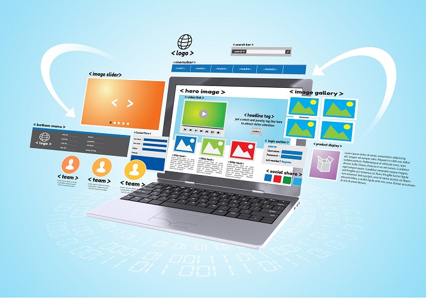

Websites and Other Resources
By Diana Restifo In today’s digital world, we seem to be surrounded by news. Clickbait, anyone? Yet the pervasive and often intrusive nature of internet news articles belies the fact that many of these sites are behind a paywall, biased, or feature low-quality reporting. Still, online articles are a great starting point for all kinds of learning assignments across the curriculum. That’s why we’ve compiled a list of the best free article websites for students. Many of these sites offer not only high-quality topical articles on every subject, but also ideas for lessons, such as questions, quizzes, and discussion prompts.